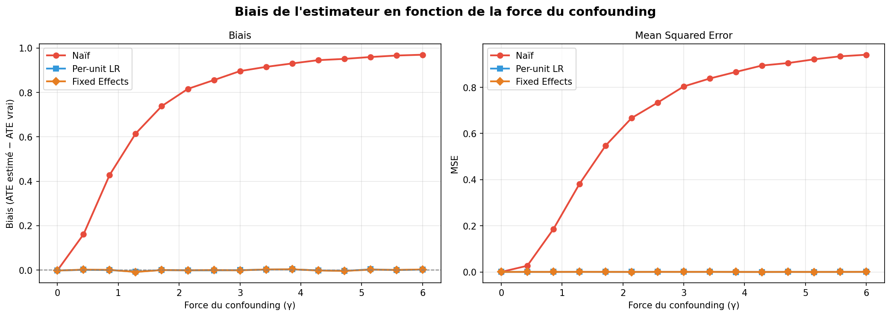
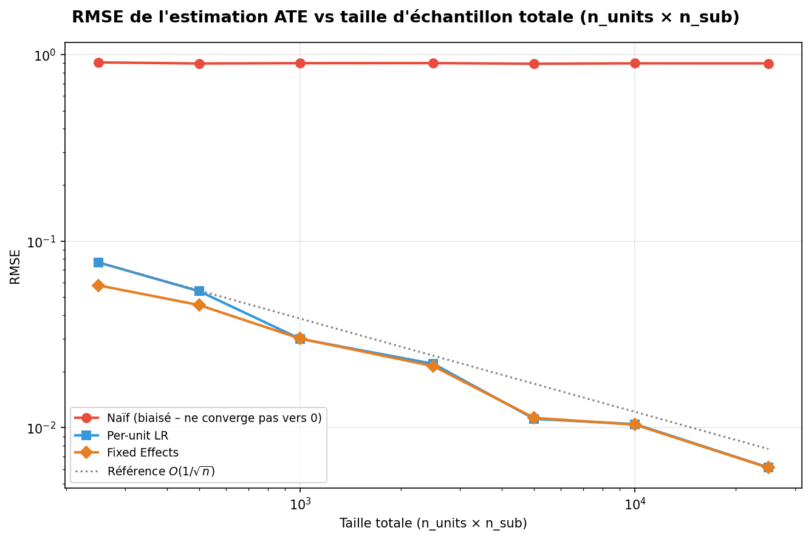
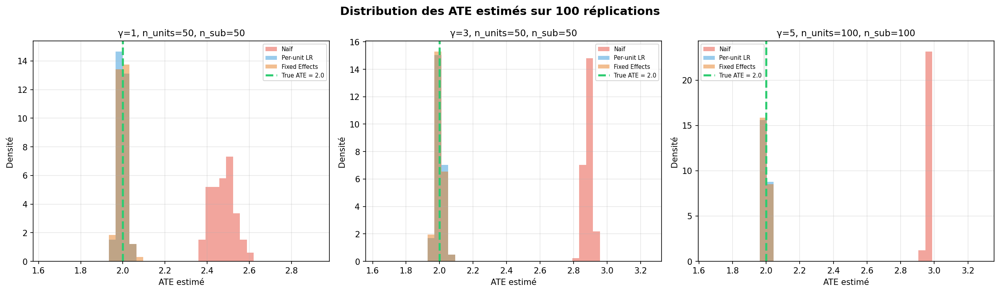
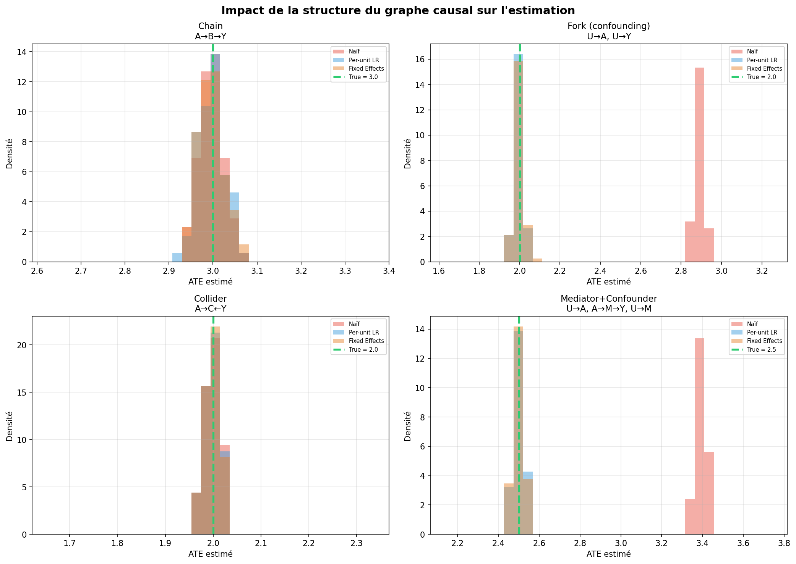
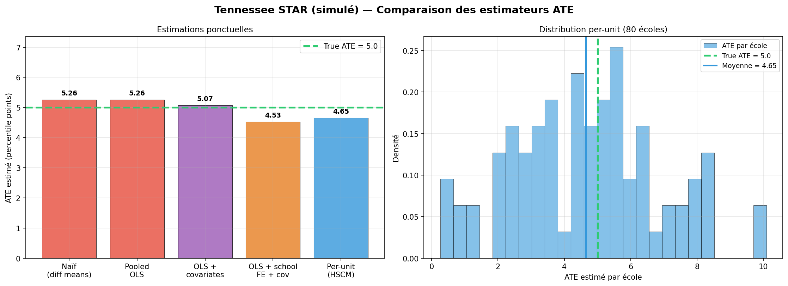
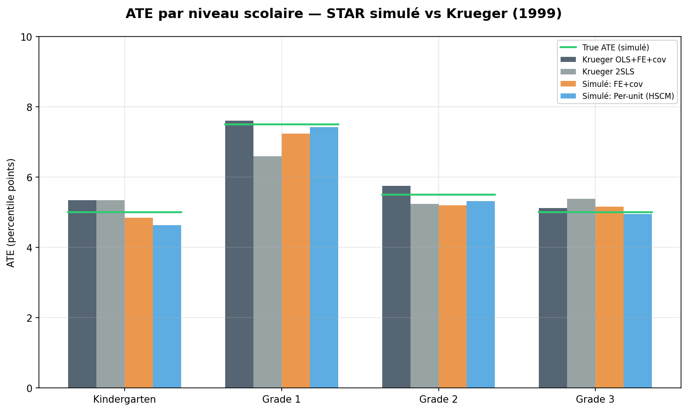

Extending causal inference to hierarchical data — when subunits are nested inside units, hierarchy can unlock causal identification that would otherwise be impossible.
Scientists often want to learn about cause and effect from hierarchical data — data collected from subunits nested inside units. Students in schools, cells in patients, citizens in states.
In such settings, unit-level variables (e.g. a school's budget) may affect subunit-level variables (e.g. each student's test scores) and vice versa. Traditional causal inference methods treat all observations as flat, losing the rich structure that hierarchy provides.
This project studies Hierarchical Causal Models (HCMs), which extend structural causal models and causal graphical models by adding inner plates. We develop a general graphical identification technique that extends do-calculus to hierarchical settings.
Hierarchical data can enable causal identification even when it would be impossible with non-hierarchical data. By disaggregating averages into individual observations within groups, we move from situations where causal effects cannot be estimated to ones where they can.
A school superintendent wants to know: how effective is after-school tutoring at raising test scores? For each school \(i\), they record the average tutoring hours \(\bar{A}_i\) and average test score \(\bar{Y}_i\).
A school's budget \(U_i\) affects both tutoring availability and test scores. With only aggregated data, this hidden confounder makes causal identification impossible.
Instead of averages, collect individual student data: for student \(j\) in school \(i\), record tutoring hours \(A_{ij}\) and test score \(Y_{ij}\).
Within each school, the confounder is held fixed. Student-level variation provides a natural experiment — enabling causal identification through hierarchy.
Cannot identify causal effect
✗ Confounded
Causal effect identifiable!
✓ Hierarchy enables identification
We formally define Hierarchical Structural Causal Models (HSCMs), extending classical SCMs with unit-level and subunit-level variables connected through deterministic mechanisms with two sources of noise: unit-level and subunit-level.
We derive Hierarchical Causal Graphical Models (HCGMs) with latent Q variables that capture the stochastic dependencies introduced by the plate structure, enabling graphical reasoning about interventions.
We develop a collapsing procedure that transforms HCMs into flat causal models, then apply augmented do-calculus to systematically identify causal effects in the original hierarchical model.
We develop estimation techniques using hierarchical Bayesian models, per-unit predictors, and Monte Carlo methods to estimate causal effects from finite hierarchical datasets, validated on the classic "eight schools" study.
First systematic formalization of hierarchical causal models with arbitrary graphs and nonparametric causal mechanisms, unifying fixed-effects models, difference-in-difference, and hierarchical Bayesian approaches as special cases.
A general graphical identification technique extending do-calculus to HCMs. We find many situations where hierarchical data enables causal identification that would be impossible with only aggregated data.
A novel method to transform hierarchical causal models into flat causal models with latent Q variables, enabling application of classical do-calculus tools to hierarchical settings.
Practical estimation techniques using hierarchical Bayesian models, validated through simulations and a reanalysis of the classic "eight schools" study, demonstrating real-world applicability.
HCMs naturally capture clustered interference and spillover effects as a special case, and handle instrumental variables in multi-site trials through the hierarchy.
An open-source Python implementation for creating, sampling, and analyzing hierarchical causal models, enabling researchers to apply HCM theory to their own datasets.
The causal effect is estimated by fitting per-unit predictors and averaging their predictions across units — each unit acts as its own natural experiment.
| Motif | Configuration | True ATE | Estimated ATE | Abs. Error | Status |
|---|---|---|---|---|---|
| Confounder | confounder | 0.700 | 0.709 | 1.3% | ✓ |
| Conf. & Interf. | conf_interf | 0.700 | 0.706 | 0.9% | ✓ |
| Instrument | instrument | 0.700 | 0.691 | 1.3% | ✓ |
| Extended | ID_ex1 | 0.500 | 0.492 | 1.6% | ✓ |
| Extended | ID_ex2 | 0.500 | 0.508 | 1.6% | ✓ |
| Targeted | ID_targeted | 0.500 | 0.489 | 2.2% | ~ |

Bias from Confounding

RMSE Convergence

ATE Distributions

Graph Structures
Replication of the landmark Tennessee STAR experiment (Krueger, 1999) — a randomized class-size study across 80 schools. We simulate the hierarchical structure (students nested in schools) and benchmark our HCM estimators against difference-in-means, OLS, and fixed-effects baselines.

Estimator Comparison

Results by Grade Level
Students nested in schools. How does tutoring affect test scores when school budgets confound the relationship?
Citizens within states. How do individual political preferences determine which party governs? How do state policies affect incomes?
Cells within patients. How do individual cell mutations determine cancer development? How do treatments affect cell survival?
Molecules within a gas. How does individual molecular motion alter pressure? How does container temperature affect molecules?
We implemented a complete Python library — hierarchicalcausalmodels — that turns the
theoretical HCM framework into a practical, end-to-end pipeline: define a hierarchical model, sample data,
collapse to a flat CGM, run do-calculus identification, and estimate causal effects numerically.
Core class for defining hierarchical SCMs. Manages unit/subunit node topology, predecessor graphs, parametric causal mechanisms (linear, logistic, additive, random), aggregator functions (subunit → unit), and supports hard, soft, and conditional soft interventions.
linear_model() / logistic_model() — parametric mechanisms with coefficient dictsadditive_model() — general additive mechanisms with custom noise (PPF-based)soft_intervention() / hard_intervention() — do-operator on any nodesample_data() — topological sampling respecting unit/subunit structurecollapse() — HCM → flat CGM with Q-variablesFull pipeline from hierarchical model to causal identification. Implements the paper's Algorithm 1 (collapse), Algorithm 2 (augment), and marginalization procedure, then delegates to pyAgrum for automated do-calculus on the resulting flat graph.
collapse() — subunit nodes → Q-variables with paper naming (Qv, Qy|a)augment_collapsed_model() — add deterministic augmentation node (Alg. 2)marginalize_augmented_model() — remove eligible QC parentsidentify_effect() — end-to-end identification returning LaTeX formula or hedge exceptionsuggest_augment_for_outcome() — auto-suggest augmentations for a given outcomeNumerical evaluation of identification formulas from observed data. Parses pyAgrum AST results, fits per-unit conditional density estimators across 12+ parametric families, and computes ATE via per-unit averaging or Monte Carlo integration.
ConditionalDensityEstimator — 12+ families: Gaussian, Beta, Gamma, Bernoulli, Half-Cauchy…per_unit.py — fit-per-unit regressors with joblib parallelism & GPU dispatchtorch_estimators.py — MLP per-unit regressors (PyTorch) for nonlinear mechanismsestimate_ate_confounder() — per-unit E[Y|A=1] − E[Y|A=0] then aggregatesensitivity_analysis() — Rosenbaum-style robustness to unmeasured confoundingfrom hierarchicalcausalmodels.models.HSCMParametric import HSCMParametric
# Define a Confounder HCM: U → A, U → Y, A → Y
nodes = {"U", "A", "Y"}
edges = {("U", "A"), ("U", "Y"), ("A", "Y")}
unit = {"U"} # school-level (hidden budget)
subunit = {"A", "Y"} # student-level (tutoring, scores)
sizes = [30] * 50 # 50 schools, 30 students each
hscm = HSCMParametric(nodes, edges, unit, subunit,
sizes, node_functions={}, data={})
# Set linear mechanisms with coefficients
hscm.linear_model({
"U": {"mean": 0, "std": 1},
"A": {"U": 0.5, "mean": 0, "std": 1},
"Y": {"U": 0.3, "A": 0.7, "mean": 0, "std": 1},
})
# Sample hierarchical data
data = hscm.sample_data()
hscm.cgm.draw() # visualize the causal graphfrom hierarchicalcausalmodels.do_calculus import (
collapse, augment_collapsed_model,
suggest_augment_for_outcome, identify_effect
)
# Step 1: Collapse HCM → flat CGM with Q-variables
collapsed = collapse(hscm)
# Creates Q^a, Q^{y|a} from subunit nodes A, Y
# Step 2: Suggest & apply augmentation
q_hat, parents = suggest_augment_for_outcome(hscm, "Y")
augmented = augment_collapsed_model(collapsed, q_hat, parents)
# Step 3: Run do-calculus identification via pyAgrum
result = identify_effect(
augmented, Y="Q^y", X="Q^a",
unobserved={"U"}
)
print(result.identifiable) # True
print(result.formula_latex) # P(Q^y|Q^a) identification formulafrom sklearn.linear_model import LinearRegression
from hierarchicalcausalmodels.estimation.per_unit import (
estimate_ate_confounder
)
from hierarchicalcausalmodels.estimation.torch_estimators import (
MLPRegressorPerUnit
)
# Per-unit linear regression: E[Y|A=1] - E[Y|A=0]
ate_linear = estimate_ate_confounder(
A, Y, regressor_class=LinearRegression
)
# Per-unit MLP (PyTorch) for nonlinear mechanisms
ate_mlp = estimate_ate_confounder(
A, Y, regressor_class=MLPRegressorPerUnit,
regressor_kwargs={"hidden_sizes": (16, 8), "max_epochs": 100}
)
# Or use parametric density estimation
from hierarchicalcausalmodels.estimation.causal_estimators import (
ConditionalDensityEstimator
)
estimator = ConditionalDensityEstimator(family="gaussian")
estimator.fit(Y, X=A) # supports 12+ parametric familiesThis Projet Scientifique Collectif (PSC) is conducted at École Polytechnique, based on the foundational work of Eli N. Weinstein and David M. Blei from the Data Science Institute and Department of Computer Science at Columbia University.
École Polytechnique
X24
École Polytechnique
X24
École Polytechnique
X24
École Polytechnique
X24
École Polytechnique
X24
X97 — Project Supervisor
X22 — Project Supervisor
"Hierarchical Causal Models"
Data Science Institute & Department of Computer Science, Columbia University, 2024
arXiv:2401.05330v2
{kind=link}
{kind=link}
{kind=link}
{kind=link}
{kind=link}
{kind=link}